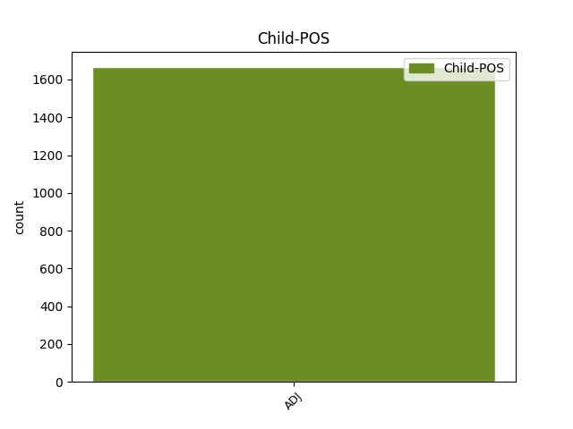

Distribution of features within this leaf

Agreement Rules sorted by frequency.
- When the dependent token is the modifer(mod) of the head token, and the head token is NOUN and the dependent token is ADJ.
1 Et _ _ _ _ 0 _ _ _
2 helårs _ _ _ _ 0 _ _ _
3 reisemål _ _ _ _ 0 _ _ _
4 for _ _ _ _ 0 _ _ _
5 den _ _ _ _ 0 _ _ _
6 som _ _ _ _ 0 _ _ _
7 liker _ _ _ _ 0 _ _ _
8 natur _ _ _ _ 0 _ _ _
9 og _ _ _ _ 0 _ _ _
10 mye mye ADJ _ Definite=Ind|Degree=Pos|Gender=Neut|Number=Sing 11 mod _ _
11 vær vær NOUN _ Definite=Ind|Gender=Neut|Number=Sing 0 _ _ _
12 . _ _ _ _ 0 _ _ _
1 Du _ _ _ _ 0 _ _ _
2 må _ _ _ _ 0 _ _ _
3 være _ _ _ _ 0 _ _ _
4 innstilt _ _ _ _ 0 _ _ _
5 på _ _ _ _ 0 _ _ _
6 at _ _ _ _ 0 _ _ _
7 du _ _ _ _ 0 _ _ _
8 kan _ _ _ _ 0 _ _ _
9 få _ _ _ _ 0 _ _ _
10 fire _ _ _ _ 0 _ _ _
11 årstider _ _ _ _ 0 _ _ _
12 på _ _ _ _ 0 _ _ _
13 en _ _ _ _ 0 _ _ _
14 dag _ _ _ _ 0 _ _ _
15 , _ _ _ _ 0 _ _ _
16 mye _ _ _ _ 0 _ _ _
17 tåke _ _ _ _ 0 _ _ _
18 , _ _ _ _ 0 _ _ _
19 vind _ _ _ _ 0 _ _ _
20 og _ _ _ _ 0 _ _ _
21 regn _ _ _ _ 0 _ _ _
22 , _ _ _ _ 0 _ _ _
23 men _ _ _ _ 0 _ _ _
24 det _ _ _ _ 0 _ _ _
25 blir _ _ _ _ 0 _ _ _
26 aldri _ _ _ _ 0 _ _ _
27 veldig veldig ADJ _ Definite=Ind|Degree=Pos|Gender=Neut|Number=Sing 28 mod _ _
28 kaldt kald ADJ _ Definite=Ind|Degree=Pos|Gender=Neut|Number=Sing 0 _ _ _
29 . _ _ _ _ 0 _ _ _
1 Her _ _ _ _ 0 _ _ _
2 gresser _ _ _ _ 0 _ _ _
3 fårene _ _ _ _ 0 _ _ _
4 i _ _ _ _ 0 _ _ _
5 det _ _ _ _ 0 _ _ _
6 frodige _ _ _ _ 0 _ _ _
7 landskapet _ _ _ _ 0 _ _ _
8 hvor _ _ _ _ 0 _ _ _
9 sjøsprøyten _ _ _ _ 0 _ _ _
10 står _ _ _ _ 0 _ _ _
11 , _ _ _ _ 0 _ _ _
12 slik _ _ _ _ 0 _ _ _
13 at _ _ _ _ 0 _ _ _
14 lammene _ _ _ _ 0 _ _ _
15 kommer _ _ _ _ 0 _ _ _
16 nærmest _ _ _ _ 0 _ _ _
17 ferdig _ _ _ _ 0 _ _ _
18 marinert marinere ADJ _ Definite=Ind|Gender=Neut|Number=Sing|VerbForm=Part 0 _ _ _
19 og _ _ _ _ 0 _ _ _
20 saltet salte ADJ _ Definite=Ind|Gender=Neut|Number=Sing|VerbForm=Part 18 conj _ _
21 til _ _ _ _ 0 _ _ _
22 slaktebenken _ _ _ _ 0 _ _ _
23 . _ _ _ _ 0 _ _ _
1 Personlig _ _ _ _ 0 _ _ _
2 synes _ _ _ _ 0 _ _ _
3 jeg _ _ _ _ 0 _ _ _
4 de _ _ _ _ 0 _ _ _
5 som _ _ _ _ 0 _ _ _
6 jobber _ _ _ _ 0 _ _ _
7 i _ _ _ _ 0 _ _ _
8 disse _ _ _ _ 0 _ _ _
9 bransjene _ _ _ _ 0 _ _ _
10 nå _ _ _ _ 0 _ _ _
11 for _ _ _ _ 0 _ _ _
12 tiden _ _ _ _ 0 _ _ _
13 ser _ _ _ _ 0 _ _ _
14 dumme _ _ _ _ 0 _ _ _
15 ut _ _ _ _ 0 _ _ _
16 - _ _ _ _ 0 _ _ _
17 med _ _ _ _ 0 _ _ _
18 buksene _ _ _ _ 0 _ _ _
19 på _ _ _ _ 0 _ _ _
20 knærne _ _ _ _ 0 _ _ _
21 og _ _ _ _ 0 _ _ _
22 håret hår NOUN _ Definite=Def|Gender=Neut|Number=Sing 0 _ _ _
23 fullt full ADJ _ Definite=Ind|Degree=Pos|Gender=Neut|Number=Sing 22 orphan _ _
24 av _ _ _ _ 0 _ _ _
25 majones _ _ _ _ 0 _ _ _
26 - _ _ _ _ 0 _ _ _
27 men _ _ _ _ 0 _ _ _
28 sannheten _ _ _ _ 0 _ _ _
29 er _ _ _ _ 0 _ _ _
30 at _ _ _ _ 0 _ _ _
31 folk _ _ _ _ 0 _ _ _
32 i _ _ _ _ 0 _ _ _
33 disse _ _ _ _ 0 _ _ _
34 bransjene _ _ _ _ 0 _ _ _
35 bestandig _ _ _ _ 0 _ _ _
36 har _ _ _ _ 0 _ _ _
37 vært _ _ _ _ 0 _ _ _
38 idioter _ _ _ _ 0 _ _ _
39 . _ _ _ _ 0 _ _ _
1 NHL _ _ _ _ 0 _ _ _
2 i _ _ _ _ 0 _ _ _
3 Europa _ _ _ _ 0 _ _ _
4 er _ _ _ _ 0 _ _ _
5 definitivt definitiv ADJ _ Definite=Ind|Degree=Pos|Gender=Neut|Number=Sing 6 mod _ _
6 noe noe PRON _ Gender=Neut|Number=Sing|Person=3|PronType=Ind,Prs 0 _ _ _
7 man _ _ _ _ 0 _ _ _
8 må _ _ _ _ 0 _ _ _
9 se _ _ _ _ 0 _ _ _
10 på _ _ _ _ 0 _ _ _
11 . _ _ _ _ 0 _ _ _
1 Med _ _ _ _ 0 _ _ _
2 hodet hode NOUN _ Definite=Def|Gender=Neut|Number=Sing 0 _ _ _
3 lett _ _ _ _ 0 _ _ _
4 vendt vende ADJ _ Definite=Ind|Gender=Neut|Number=Sing|VerbForm=Part 2 comp:pred _ _
5 mot _ _ _ _ 0 _ _ _
6 høyre _ _ _ _ 0 _ _ _
7 retter _ _ _ _ 0 _ _ _
8 han _ _ _ _ 0 _ _ _
9 blikket _ _ _ _ 0 _ _ _
10 mot _ _ _ _ 0 _ _ _
11 fremtiden _ _ _ _ 0 _ _ _
12 . _ _ _ _ 0 _ _ _
1 Bellona _ _ _ _ 0 _ _ _
2 er _ _ _ _ 0 _ _ _
3 svært _ _ _ _ 0 _ _ _
4 fornøyd _ _ _ _ 0 _ _ _
5 med _ _ _ _ 0 _ _ _
6 at _ _ _ _ 0 _ _ _
7 EU-landene _ _ _ _ 0 _ _ _
8 har _ _ _ _ 0 _ _ _
9 klart _ _ _ _ 0 _ _ _
10 å _ _ _ _ 0 _ _ _
11 bli _ _ _ _ 0 _ _ _
12 enige _ _ _ _ 0 _ _ _
13 om _ _ _ _ 0 _ _ _
14 bindende _ _ _ _ 0 _ _ _
15 målsetninger _ _ _ _ 0 _ _ _
16 , _ _ _ _ 0 _ _ _
17 både _ _ _ _ 0 _ _ _
18 et _ _ _ _ 0 _ _ _
19 samlet _ _ _ _ 0 _ _ _
20 mål mål NOUN _ Definite=Ind|Gender=Neut|Number=Sing 0 _ _ _
21 og _ _ _ _ 0 _ _ _
22 fordelt fordele ADJ _ Definite=Ind|Gender=Neut|Number=Sing|VerbForm=Part 20 conj _ _
23 på _ _ _ _ 0 _ _ _
24 hvert _ _ _ _ 0 _ _ _
25 enkelt _ _ _ _ 0 _ _ _
26 medlemsland _ _ _ _ 0 _ _ _
27 . _ _ _ _ 0 _ _ _
1 Slikt slikt PRON _ Gender=Neut|Number=Sing|Person=3|PronType=Prs 0 _ _ _
2 som _ _ _ _ 0 _ _ _
3 kan _ _ _ _ 0 _ _ _
4 skje _ _ _ _ 0 _ _ _
5 , _ _ _ _ 0 _ _ _
6 men _ _ _ _ 0 _ _ _
7 maksimalt _ _ _ _ 0 _ _ _
8 uheldig uheldig ADJ _ Definite=Ind|Degree=Pos|Gender=Neut|Number=Sing 1 conj _ _
9 for _ _ _ _ 0 _ _ _
10 laget _ _ _ _ 0 _ _ _
11 . _ _ _ _ 0 _ _ _
1 Men _ _ _ _ 0 _ _ _
2 jeg _ _ _ _ 0 _ _ _
3 ser _ _ _ _ 0 _ _ _
4 at _ _ _ _ 0 _ _ _
5 det _ _ _ _ 0 _ _ _
6 er _ _ _ _ 0 _ _ _
7 fullt _ _ _ _ 0 _ _ _
8 mulig _ _ _ _ 0 _ _ _
9 å _ _ _ _ 0 _ _ _
10 trekke _ _ _ _ 0 _ _ _
11 samme _ _ _ _ 0 _ _ _
12 konklusjon _ _ _ _ 0 _ _ _
13 som _ _ _ _ 0 _ _ _
14 Kjell _ _ _ _ 0 _ _ _
15 Aamot _ _ _ _ 0 _ _ _
16 , _ _ _ _ 0 _ _ _
17 og _ _ _ _ 0 _ _ _
18 det det PRON _ Gender=Neut|Number=Sing|Person=3|PronType=Prs 0 _ _ _
19 særlig særlig ADJ _ Definite=Ind|Degree=Pos|Gender=Neut|Number=Sing 18 orphan _ _
20 midt _ _ _ _ 0 _ _ _
21 i _ _ _ _ 0 _ _ _
22 en _ _ _ _ 0 _ _ _
23 finanskrise _ _ _ _ 0 _ _ _
24 . _ _ _ _ 0 _ _ _
1 Men _ _ _ _ 0 _ _ _
2 TV-sendinger _ _ _ _ 0 _ _ _
3 i _ _ _ _ 0 _ _ _
4 farger _ _ _ _ 0 _ _ _
5 , _ _ _ _ 0 _ _ _
6 det _ _ _ _ 0 _ _ _
7 hadde _ _ _ _ 0 _ _ _
8 de _ _ _ _ 0 _ _ _
9 som _ _ _ _ 0 _ _ _
10 solgte _ _ _ _ 0 _ _ _
11 sort sort ADJ _ Definite=Ind|Degree=Pos|Gender=Neut|Number=Sing 14 compound _ _
12 / _ _ _ _ 0 _ _ _
13 hvitt _ _ _ _ 0 _ _ _
14 apparater apparat NOUN _ Definite=Ind|Gender=Neut|Number=Plur 0 _ _ _
15 , _ _ _ _ 0 _ _ _
16 ingen _ _ _ _ 0 _ _ _
17 tro _ _ _ _ 0 _ _ _
18 på _ _ _ _ 0 _ _ _
19 vil _ _ _ _ 0 _ _ _
20 bli _ _ _ _ 0 _ _ _
21 en _ _ _ _ 0 _ _ _
22 suksess _ _ _ _ 0 _ _ _
23 - _ _ _ _ 0 _ _ _
24 så _ _ _ _ 0 _ _ _
25 de _ _ _ _ 0 _ _ _
26 nektet _ _ _ _ 0 _ _ _
27 å _ _ _ _ 0 _ _ _
28 selge _ _ _ _ 0 _ _ _
29 farge-TV _ _ _ _ 0 _ _ _
30 - _ _ _ _ 0 _ _ _
31 helt _ _ _ _ 0 _ _ _
32 til _ _ _ _ 0 _ _ _
33 de _ _ _ _ 0 _ _ _
34 også _ _ _ _ 0 _ _ _
35 gikk _ _ _ _ 0 _ _ _
36 konkurs _ _ _ _ 0 _ _ _
37 . _ _ _ _ 0 _ _ _
1 Mannen _ _ _ _ 0 _ _ _
2 bak _ _ _ _ 0 _ _ _
3 dobbeltdrapet _ _ _ _ 0 _ _ _
4 i _ _ _ _ 0 _ _ _
5 Skaregata _ _ _ _ 0 _ _ _
6 2 _ _ _ _ 0 _ _ _
7 for _ _ _ _ 0 _ _ _
8 knapt knapp ADJ _ Definite=Ind|Degree=Pos|Gender=Neut|Number=Sing 9 mod _ _
9 ett én NUM _ Gender=Neut|Number=Sing|NumType=Card 0 _ _ _
10 år _ _ _ _ 0 _ _ _
11 siden _ _ _ _ 0 _ _ _
12 , _ _ _ _ 0 _ _ _
13 Roy-Christer _ _ _ _ 0 _ _ _
14 Forsberg _ _ _ _ 0 _ _ _
15 ( _ _ _ _ 0 _ _ _
16 28 _ _ _ _ 0 _ _ _
17 ) _ _ _ _ 0 _ _ _
18 , _ _ _ _ 0 _ _ _
19 er _ _ _ _ 0 _ _ _
20 av _ _ _ _ 0 _ _ _
21 en _ _ _ _ 0 _ _ _
22 enstemmig _ _ _ _ 0 _ _ _
23 Sunnmøre _ _ _ _ 0 _ _ _
24 herredsrett _ _ _ _ 0 _ _ _
25 dømt _ _ _ _ 0 _ _ _
26 til _ _ _ _ 0 _ _ _
27 en _ _ _ _ 0 _ _ _
28 fengselsstraff _ _ _ _ 0 _ _ _
29 på _ _ _ _ 0 _ _ _
30 21 _ _ _ _ 0 _ _ _
31 år _ _ _ _ 0 _ _ _
32 . _ _ _ _ 0 _ _ _
1 To _ _ _ _ 0 _ _ _
2 straffekast straffekast NOUN _ Definite=Ind|Gender=Neut|Number=Plur 0 _ _ _
3 , _ _ _ _ 0 _ _ _
4 begge _ _ _ _ 0 _ _ _
5 signert signere ADJ _ Definite=Ind|Gender=Neut|Number=Sing|VerbForm=Part 2 appos _ _
6 Marit _ _ _ _ 0 _ _ _
7 Davik _ _ _ _ 0 _ _ _
8 , _ _ _ _ 0 _ _ _
9 gikk _ _ _ _ 0 _ _ _
10 inn _ _ _ _ 0 _ _ _
11 og _ _ _ _ 0 _ _ _
12 dermed _ _ _ _ 0 _ _ _
13 var _ _ _ _ 0 _ _ _
14 to-målsseieren _ _ _ _ 0 _ _ _
15 sikret _ _ _ _ 0 _ _ _
16 . _ _ _ _ 0 _ _ _
Disagree Examples:
1 UNICEF _ _ _ _ 0 _ _ _
2 arbeider _ _ _ _ 0 _ _ _
3 i _ _ _ _ 0 _ _ _
4 162 _ _ _ _ 0 _ _ _
5 land _ _ _ _ 0 _ _ _
6 , _ _ _ _ 0 _ _ _
7 og _ _ _ _ 0 _ _ _
8 prioriterte _ _ _ _ 0 _ _ _
9 oppgaver _ _ _ _ 0 _ _ _
10 er _ _ _ _ 0 _ _ _
11 små _ _ _ _ 0 _ _ _
12 barns _ _ _ _ 0 _ _ _
13 helse _ _ _ _ 0 _ _ _
14 og _ _ _ _ 0 _ _ _
15 utvikling _ _ _ _ 0 _ _ _
16 , _ _ _ _ 0 _ _ _
17 skolegang _ _ _ _ 0 _ _ _
18 - _ _ _ _ 0 _ _ _
19 særlig _ _ _ _ 0 _ _ _
20 for _ _ _ _ 0 _ _ _
21 jenter _ _ _ _ 0 _ _ _
22 , _ _ _ _ 0 _ _ _
23 HIV _ _ _ _ 0 _ _ _
24 / _ _ _ _ 0 _ _ _
25 AIDS _ _ _ _ 0 _ _ _
26 og _ _ _ _ 0 _ _ _
27 tiltak _ _ _ _ 0 _ _ _
28 for _ _ _ _ 0 _ _ _
29 å _ _ _ _ 0 _ _ _
30 beskytte _ _ _ _ 0 _ _ _
31 barn _ _ _ _ 0 _ _ _
32 mot _ _ _ _ 0 _ _ _
33 utnyttelse utnyttelse NOUN _ Definite=Ind|Gender=Masc|Number=Sing 0 _ _ _
34 seksuelt seksuell ADJ _ Definite=Ind|Degree=Pos|Gender=Neut|Number=Sing 33 mod _ _
35 , _ _ _ _ 0 _ _ _
36 i _ _ _ _ 0 _ _ _
37 arbeid _ _ _ _ 0 _ _ _
38 og _ _ _ _ 0 _ _ _
39 som _ _ _ _ 0 _ _ _
40 soldater _ _ _ _ 0 _ _ _
41 . _ _ _ _ 0 _ _ _
1 Lavmælt lavmælt ADJ _ Definite=Ind|Degree=Pos|Gender=Neut|Number=Sing 5 mod _ _
2 og _ _ _ _ 0 _ _ _
3 insisterende _ _ _ _ 0 _ _ _
4 sto _ _ _ _ 0 _ _ _
5 han han PRON _ Animacy=Hum|Case=Nom|Gender=Masc|Number=Sing|Person=3|PronType=Prs 0 _ _ _
6 der _ _ _ _ 0 _ _ _
7 , _ _ _ _ 0 _ _ _
8 foran _ _ _ _ 0 _ _ _
9 kong _ _ _ _ 0 _ _ _
10 Harald _ _ _ _ 0 _ _ _
11 , _ _ _ _ 0 _ _ _
12 kronprinsparet _ _ _ _ 0 _ _ _
13 og _ _ _ _ 0 _ _ _
14 prinsesse _ _ _ _ 0 _ _ _
15 Märtha _ _ _ _ 0 _ _ _
16 Louise _ _ _ _ 0 _ _ _
17 , _ _ _ _ 0 _ _ _
18 foran _ _ _ _ 0 _ _ _
19 høyesterettsjustitiarius _ _ _ _ 0 _ _ _
20 med _ _ _ _ 0 _ _ _
21 frue _ _ _ _ 0 _ _ _
22 , _ _ _ _ 0 _ _ _
23 foran _ _ _ _ 0 _ _ _
24 statsminister _ _ _ _ 0 _ _ _
25 , _ _ _ _ 0 _ _ _
26 utenriksminister _ _ _ _ 0 _ _ _
27 , _ _ _ _ 0 _ _ _
28 Storting _ _ _ _ 0 _ _ _
29 og _ _ _ _ 0 _ _ _
30 Regjering _ _ _ _ 0 _ _ _
31 . _ _ _ _ 0 _ _ _
1 - _ _ _ _ 0 _ _ _
2 Det _ _ _ _ 0 _ _ _
3 var _ _ _ _ 0 _ _ _
4 absolutt absolutt ADJ _ Definite=Ind|Degree=Pos|Gender=Neut|Number=Sing 7 mod _ _
5 en _ _ _ _ 0 _ _ _
6 godkjent _ _ _ _ 0 _ _ _
7 innsats innsats NOUN _ Definite=Ind|Gender=Masc|Number=Sing 0 _ _ _
8 av _ _ _ _ 0 _ _ _
9 våre _ _ _ _ 0 _ _ _
10 i _ _ _ _ 0 _ _ _
11 dag _ _ _ _ 0 _ _ _
12 , _ _ _ _ 0 _ _ _
13 sa _ _ _ _ 0 _ _ _
14 Løvberg _ _ _ _ 0 _ _ _
15 til _ _ _ _ 0 _ _ _
16 NTB _ _ _ _ 0 _ _ _
17 . _ _ _ _ 0 _ _ _
1 - _ _ _ _ 0 _ _ _
2 Fra _ _ _ _ 0 _ _ _
3 norsk _ _ _ _ 0 _ _ _
4 side _ _ _ _ 0 _ _ _
5 tar _ _ _ _ 0 _ _ _
6 vi _ _ _ _ 0 _ _ _
7 avstand _ _ _ _ 0 _ _ _
8 fra _ _ _ _ 0 _ _ _
9 militær _ _ _ _ 0 _ _ _
10 maktovertakelse _ _ _ _ 0 _ _ _
11 , _ _ _ _ 0 _ _ _
12 og _ _ _ _ 0 _ _ _
13 vi _ _ _ _ 0 _ _ _
14 oppfordrer _ _ _ _ 0 _ _ _
15 sterkt _ _ _ _ 0 _ _ _
16 til _ _ _ _ 0 _ _ _
17 at _ _ _ _ 0 _ _ _
18 lovlig lovlig ADJ _ Definite=Ind|Degree=Pos|Gender=Neut|Number=Sing 20 mod _ _
19 valgte _ _ _ _ 0 _ _ _
20 myndigheter myndighet NOUN _ Definite=Ind|Gender=Fem|Number=Plur 0 _ _ _
21 snarest _ _ _ _ 0 _ _ _
22 gjeninnsettes _ _ _ _ 0 _ _ _
23 , _ _ _ _ 0 _ _ _
24 og _ _ _ _ 0 _ _ _
25 at _ _ _ _ 0 _ _ _
26 demokratiske _ _ _ _ 0 _ _ _
27 prinsipper _ _ _ _ 0 _ _ _
28 følges _ _ _ _ 0 _ _ _
29 , _ _ _ _ 0 _ _ _
30 sier _ _ _ _ 0 _ _ _
31 kommunikasjonsrådgiver _ _ _ _ 0 _ _ _
32 Marte _ _ _ _ 0 _ _ _
33 Lerberg _ _ _ _ 0 _ _ _
34 Koppstad _ _ _ _ 0 _ _ _
35 i _ _ _ _ 0 _ _ _
36 Utenriksdepartementet _ _ _ _ 0 _ _ _
37 til _ _ _ _ 0 _ _ _
38 NTB _ _ _ _ 0 _ _ _
39 . _ _ _ _ 0 _ _ _
1 Torsdag _ _ _ _ 0 _ _ _
2 var _ _ _ _ 0 _ _ _
3 han _ _ _ _ 0 _ _ _
4 formelt formell ADJ _ Definite=Ind|Degree=Pos|Gender=Neut|Number=Sing 7 mod _ _
5 ikke _ _ _ _ 0 _ _ _
6 lenger _ _ _ _ 0 _ _ _
7 Viking-spiller Viking-spiller NOUN _ Definite=Ind|Gender=Masc|Number=Sing 0 _ _ _
8 , _ _ _ _ 0 _ _ _
9 siden _ _ _ _ 0 _ _ _
10 kontrakten _ _ _ _ 0 _ _ _
11 gikk _ _ _ _ 0 _ _ _
12 ut _ _ _ _ 0 _ _ _
13 onsdag _ _ _ _ 0 _ _ _
14 . _ _ _ _ 0 _ _ _